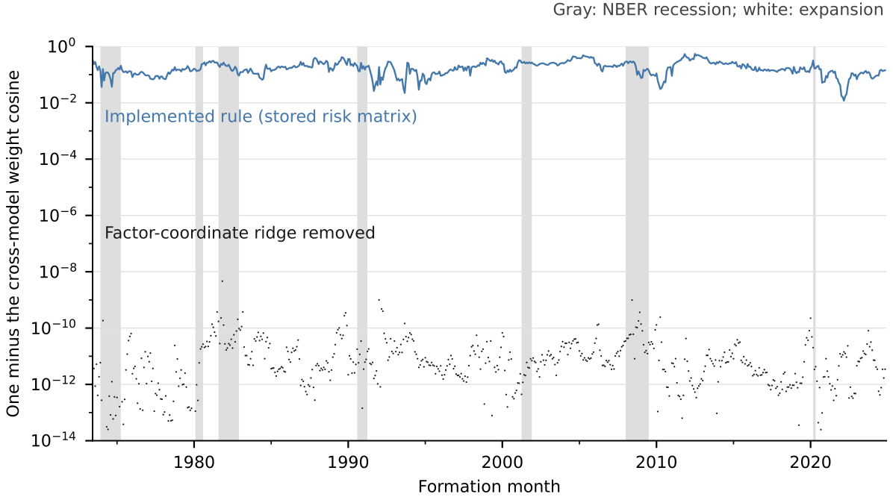

palette = ({
naipca_iab: "#18557f", complete: "#18557f",
qz_ipca: "#8a6a1a",
ipca: "#6f9cc0", rp_pca: "#7a7a7a", ff5: "#b3b3b3",
naipca_beta_only: "#8a8378", beta_only: "#8a8378",
band: "rgba(0,0,0,0.06)", muted: "rgba(0,0,0,0.6)", rule: "rgba(0,0,0,0.1)"
})
LANG = (document.documentElement.lang || "en").startsWith("zh") ? "zh" : "en"
STR = ({ en: { view: "View", cost: "Cost (bp per traded dollar)", universe: "Universe", sample: "Sample (months)", log: "Log scale", models: "Models", statistic: "Statistic", theme: "Theme", sort: "Sort by", method: "Method", scenario: "Scenario", block: "Block (months)", metric: "Metric", intervals: "Intervals", cost_bp: "One-way cost (bp)", failed: "Interactive data failed to load. The static figure is shown instead." },
zh: { view: "视图", cost: "成本（每交易一美元，基点）", universe: "股票池", sample: "样本（月）", log: "对数坐标", models: "模型", statistic: "统计量", theme: "主题", sort: "排序", method: "方法", scenario: "情景", block: "块长（月）", metric: "指标", intervals: "区间", cost_bp: "单边成本（基点）", failed: "交互数据加载失败，改为显示静态图。" } })
t = (k) => STR[LANG][k] ?? STR.en[k] ?? k
fmt2 = (x) => (x == null || Number.isNaN(x)) ? "n/a" : x.toFixed(2)
fmt1 = (x) => (x == null || Number.isNaN(x)) ? "n/a" : x.toFixed(1)
fmtBp = (x) => (x == null || Number.isNaN(x)) ? "> 500" : `${Math.round(x)} bp`
parseMonth = (s) => new Date(`${s}-01T00:00:00Z`)
// Sharpe, annualised, sample std (ddof = 1): matches the release convention
sharpe = (r) => {
const n = r.length, m = r.reduce((a, b) => a + b, 0) / n
const v = r.reduce((a, b) => a + (b - m) ** 2, 0) / (n - 1)
const vol = Math.sqrt(v) * Math.sqrt(12)
return vol > 1e-12 ? (m * 12) / vol : NaN
}
netSeries = (r, to, bp) => r.map((x, i) => x - to[i] * bp / 1e4)
wealthPath = (r) => { let w = 1; return r.map((x) => (w *= 1 + x)) }
nberMarks = (nber) => Plot.rectX(nber, { x1: (d) => parseMonth(d.start), x2: (d) => parseMonth(d.end), fill: palette.band })Characteristic Geometry and Portfolio Choice
Why two factor models with nearly the same forecasts can hold different portfolios, and what a factor-only portfolio leaves out.
Slides (PDF) · Manuscript in preparation · BibTeX
Working paper · September 2026 · not yet posted, no DOI · every number in the text is located in the slides above (Figure 3’s tables use the paper’s research release)
Two factor models can agree on stock-return forecasts to within about five parts in a million and still build noticeably different portfolios: on a similarity scale where 1 means identical proportions and 0 means no overlap, the typical month scores 0.83 (slides, p. 9). The two models differ only in the ruler they use to measure exposure. The gap comes from a small fixed safety constant (a ridge) that the portfolio rule adds to each factor’s risk; written in the ruler’s units, it holds back different stock positions under each ruler. Delete only that constant and the two portfolios nearly coincide (slides, p. 11).
A portfolio needs two inputs, a risk penalty and a return forecast. The first result concerns the penalty; the second turns to the forecast. A factor-only rule uses just the part of expected returns the factors explain. Within one fitted model, also using the part no factor explains (the intercept) raises the Sharpe ratio (average return per unit of volatility) before trading costs from 0.39 to 2.51 over 594 months (slides, p. 14). Since October 2007, the gain in average return from using the intercept is imprecisely estimated (slides, p. 15).
1 The question
In the agenda, this paper asks: same forecast, different portfolio? Interpreting Pricing Errors asks what a model’s alpha means; this paper moves from reading the model to acting on it. Characteristic Libraries then asks whether the way the library is written can move holdings too.
If two factor models make almost the same forecasts but measure exposure with different rulers, do they tell the investor to hold the same stocks? And what does using the model’s intercept add?
To say how much of a stock’s expected return each driver explains, a model must first decide when two combinations of characteristics are really different, and how large each one is. The rule it uses for that is the ruler. Give each characteristic a weight and add them up: every stock gets a score. Such a weighted combination is called a direction (it is not a portfolio). The plain ruler (the Euclidean or identity metric) judges a direction by its weights alone. The characteristic ruler (the Gram metric) judges it by the scores it gives real stocks: how large they typically are, and whether two directions’ scores line up across stocks, high on the same stocks and low on the same stocks. So the ruler is the convention a model uses to measure how large a direction is and how much two directions overlap. Two value signals that pick out the same cheap stocks count as overlapping under the characteristic ruler but as unrelated under the plain ruler.
The paper compares two separately estimated versions of one factor model that differ only in the ruler. IPCA (instrumented principal component analysis) is a standard factor model in which characteristics decide how strongly each stock moves with the common drivers (Kelly et al. 2019); it uses the plain ruler. QZ-IPCA is the same model with the characteristic ruler. A third model, NA-IPCA (No-Arbitrage IPCA), also uses the characteristic ruler and adds an intercept: the part of expected return that no factor in this model explains (the home page’s “alpha” is a close relative, measured against a stated benchmark model). The “no-arbitrage” in its name refers to a cap on how much the intercept may carry; the cap never binds in the saved windows (slides, pp. 4, 13).
2 Why it matters
Research usually compares factor models by their forecasts, but investors hold portfolios, built through a risk model with its own units and settings. If those conventions move holdings, a manager who switches risk models may read the new positions as a new signal when nothing in the forecast has changed.
- Economic. Forecast accuracy alone misses how risk-model settings move holdings. A factor-only portfolio also leaves unused the value the intercept adds before trading costs (slides, p. 14).
- Practical. A setting that looks like a numerical-stability parameter (0.01 on each factor’s risk) in effect becomes a preference over factor exposures, so it changes how much of each factor the rule holds. Knowing this tells a manager which setting to hold fixed, or to convert with the ruler’s units, before reading a change in holdings as a signal (slides, pp. 10, 30).
- Statistical. The 132 characteristics overlap heavily: they vary like about 20 equally large directions (median participation dimension 19.8), so how overlap is measured is a real modelling choice (slides, p. 7).
Note: this paper’s ruler, month by month. The EWMA version of the characteristic ruler used here is re-estimated each month over 618 months. Its participation dimension (how many equally large directions of variation the paper’s characteristics behave like) runs from 17.36 to 22.63. Its median is 19.8. The largest direction’s share of the spread runs from 11.76% to 15.21% (slides, pp. 7, 23). Data: rolling_geometry.csv from the paper’s research release (not public). The home page’s Figure 1 is a separate, descriptive exhibit on the 153-characteristic library and is not drawn from this paper. Files and pipeline: Data & Code.
3 The argument at a glance
- Question. Investors hold portfolios, not forecasts, so a fair comparison follows the forecast to the holdings. → The question
- Framework. A matched change of ruler only re-expresses the fit; IPCA and QZ-IPCA forecasts typically differ by about five parts in a million (slides, pp. 9, 10, 30). → The framework
- Mechanism. The portfolio rule’s fixed ridge (0.01 on each factor’s risk) is written in the ruler’s units, so the same number holds back different stock positions. → A simple example
- Evidence. So near-identical forecasts give different portfolios: weight similarity 0.83, where 1 means identical. → Design and main results
- Test. Deleting only the constant shrinks the gap in unscaled weights from 61% to about four parts in a million; the fix is to convert it with the units. → Design and main results
- Second result. Within one fit, switching on the intercept raises the Sharpe ratio before trading costs from 0.39 to 2.51 over 594 months. → Design and main results
- Boundary. So compare forecasts, risk penalties and expected-return inputs one at a time. The limits: returns are before trading costs, ridge removal is a mechanism check, the intercept is not shown to be mispricing, the post-2007 mean-return gain is imprecise, and no ruler is shown to be best. → Scope
4 The framework
The portfolio rule holds more of a factor when its forecast is high relative to its estimated risk. For numerical stability it adds a small constant (0.01, a ridge) to each factor’s risk, which makes the rule hold a little less of every factor. That constant is set in the ruler’s units, so changing the ruler changes how strongly each stock position is held back (slides, p. 10).
Under the characteristic ruler, two directions count as unrelated only if the scores they give stocks do not line up on average: their average product across stocks is zero (slides, p. 5). Changing the ruler is a matched change of units: the forecast and the stock risk before the ridge stay the same. The loadings are rescaled, and overlap moves among the hidden factors inferred from the data, the observed Fama–French factors and the intercept (slides, pp. 6, 10, 30). Of the portfolio rule’s inputs, only the ridge charge changes: doubling a factor and halving its loadings cuts the charge on that direction to a quarter (slides, p. 10). The general theory is in Characteristic-Space Metrics (Liu 2026).
Technical details
The model writes stock i’s next-month excess return as follows (slides, p. 4):
r_{i,s+1} = z_{i,s}'\Gamma_\beta f_{s+1} + z_{i,s}'\Gamma_\delta g_{s+1} + z_{i,s}'\Gamma_\alpha + \varepsilon_{i,s+1}.
Here z_{i,s} lists 132 characteristics, f the three hidden factors and g the five Fama–French factors; each \Gamma turns characteristics into loadings. The characteristic ruler is the average across stocks of products of characteristics, taken over the estimation window (slides, p. 6). NA-IPCA caps how much the intercept may carry, \Gamma_\alpha' Q\,\Gamma_\alpha \le 0.035, a cap that is slack in all saved windows (slides, p. 13).
The portfolio rule chooses weights w to solve (slides, pp. 8, 10)
\max_w \; w'\hat\mu \;-\; \tfrac12\, w'A_0\, w \;-\; \tfrac{\lambda_F}{2}\,\lVert B'w\rVert^2 ,
where \hat\mu is the forecast, A_0 is the risk matrix without the factor ridge, B'w is the portfolio’s loading on each factor and \lambda_F = 0.01. Under a matched change of units only the last term changes, because it charges loadings in each factor’s own units. Converting the ridge with the units, R_F^* = C R_F C', keeps the stock-level penalty the same (slides, pp. 10, 30).
5 A simple example
Try this. Here k sets the ruler’s unit: k = 2 doubles the factor and halves its stock loadings, which leaves the forecast unchanged (slides, p. 10). (1) At k = 1 the portfolio is 50/50. (2) Drag k to 2. Rows 1 and 2 of the table do not move; only row 3, the ridge charge, falls from 0.0100 to 0.0025, because the loading is halved and the charge depends on its square. Stock 1’s share rises to 54%. (3) Drag k to 0.25. The charge grows sixteen-fold and stock 1 falls to 20%. (4) Choose “Convert the ridge with the units”: the dot moves to the dashed line, flat at 50% for every k. “Remove the factor ridge” also gives 50% here. What to notice: nothing about the stocks changed, only the units in which a fixed constant was charged.
Figure 1: Same forecast, same risk, different ridge charge. Two stocks; the units of factor 1 change and nothing else does.
How to read it. Stock 1 loads on factor 1 (mean 0.01, variance 0.02, loading 1); stock 2 loads on an independent factor whose units never change. Each stock has residual variance 0.01 plus its own ridge of 0.01 (the stock-level ridge). The paper’s data test removes the ridge; its proposed remedy converts the ridge with the units, which the paper calls transporting the ridge (slides, pp. 11, 16, 30). Source: illustrative arithmetic on the portfolio rule in the paper (slides, pp. 8, 10); no data files.
Two cooks follow the same recipe. One measures flour in cups, the other in half-cups. The recipe also says “add a pinch of salt per unit of flour”, so the half-cup cook adds more salt, although the flour is the same. The difference lies in how the rule is written, not in the ingredients. There are two fixes: drop the rule, or convert it with the units. In the paper, the flour is the forecast, the unit is set by the ruler, and the pinch is the ridge of 0.01 on each factor’s risk. Unlike salt, the ridge is a charge that makes the rule hold less of each factor, and a real change of ruler also mixes exposures.
6 Design and main results
The data are 132 characteristics of Core stocks (U.S. stocks excluding micro-caps), rank-scaled each month (Jensen et al. 2023) (slides, pp. 4, 5, 8). Each month the models are refitted on the previous 120 months and each portfolio is held one month, giving 618 portfolio months from June 1973 to November 2024 (slides, p. 8). The characteristic ruler comes in three versions that weight those months differently: EWMA (exponentially weighted moving average, 60-month half-life), equal-120 and rolling-60 (slides, p. 31). Intervals come from a paired 12-month block bootstrap with 10,000 draws (slides, p. 14).
Table 1: Forecasts agree, holdings do not, until the ridge is removed. QZ-IPCA with the EWMA version of the characteristic ruler versus IPCA, 618 months.
| Diagnostic | Median | Maximum |
|---|---|---|
| Relative forecast gap | 4.7 × 10⁻⁶ | — |
| Weight similarity (1 = identical proportions, 0 = no overlap) | 0.830 | — |
| Relative gap in unscaled weights, implemented rule | 0.607 | 0.895 |
| Relative gap in unscaled weights, factor ridge removed | 3.9 × 10⁻⁶ | 9.6 × 10⁻⁵ |
Relative gaps use IPCA as the benchmark; unlike weight similarity, which compares proportions, the weight gaps also reflect scale (slides, pp. 9, 27).
Figure 2: Removing only the factor ridge makes the two portfolios’ proportions nearly identical. One minus the weight similarity between the IPCA and QZ-IPCA portfolios, 618 months, log scale.

How to read it. The axis’s cosine is the weight similarity; lower means closer proportions (0 = identical). Upper line: the implemented rule. Lower dots: the same solve after deleting only the factor ridge (median 6.0 × 10⁻¹², maximum 4.6 × 10⁻⁹), holding forecasts, residual risk and the stock-level ridge fixed. Grey bands are NBER recessions (slides, pp. 27, 28). Source: Characteristic Geometry and Portfolio Choice, working paper (September 2026), reproduced from the paper’s own figure file
fig_mechanism_identity.pdf.
What this shows. The two portfolios differ in every month, recession or expansion; without the ridge they nearly coincide (slides, p. 27). The models were estimated separately, so this near-agreement is a finding, not built in. It checks the mechanism, not performance (slides, p. 11).
Figure 3: A holdings difference is not yet a reliable return gain. Compounded cumulative return, positions scaled to a total size of one, June 1973 to November 2024; the intercept views use 594 months from June 1975.
How to read it. Across models: 618 months. QZ-IPCA is its best version by Sharpe ratio, rolling-60 (Table 1 uses EWMA) (slides, p. 31); the complete rule’s first 24 months lack 24 prior estimates, unlike Table 2 (slides, p. 13). Intercept off vs complete intercept rule: by stock-size group (slides, pp. 40, 41). One fit, three inputs: Table 2 as bars (slides, p. 38). Before trading costs by default; the 10 and 50 bp views (basis points; 1 bp = 0.01 percentage point) subtract a turnover-proxy cost and are not implementable net returns (slides, p. 47). Source: Characteristic Geometry and Portfolio Choice, working paper (September 2026); research release 2026-09-09,
core_monthly_unitgross_returns_source.csv, core_model_performance_618.csv, iab_ra_monthly.csv, beta_only_monthly.csv, Strict24_Main_Performance.csv, Strict24_Paired_Inference.csv, ablation_summary.csv, nber_monthly.csv; release not public; paths compounded by this site, descriptive only. Data · PNG

What this shows. Over the 618 months, the Sharpe ratio before trading costs is 0.64 for IPCA and 0.85 to 1.00 for the three QZ-IPCA versions (slides, p. 31). These portfolios keep the fixed ridge; as the forecasts nearly agree, the holdings gap behind this return difference traces to that ridge, not to a better forecast (slides, pp. 11, 27). Only for the rolling-60 version does the 95% interval of the Sharpe difference from IPCA, 0.37 [0.02, 0.68], exclude zero, and only with 12-month bootstrap blocks (slides, pp. 34, 36). On Table 2’s 594-month sample, all three Sharpe intervals exclude zero but no mean-return interval does (slides, p. 35). The ranking of rulers is not robust, and the paper selects no optimal ruler (slides, p. 16).
The second result holds one NA-IPCA fit fixed and switches one portfolio input at a time: intercept off, intercept in the mean only, and the complete intercept rule, which adds a risk charge for how much the intercept loadings varied over the 24 previous estimates (slides, p. 13).
Table 2: One fit, three inputs. NA-IPCA with the EWMA version of the characteristic ruler, 594 months, before trading costs.
| Intercept off | Mean only | Complete intercept rule | |
|---|---|---|---|
| Sharpe ratio | 0.39 | 2.51 | 2.53 |
| Annualised mean (%) | 1.75 | 7.59 | 7.60 |
| Annualised volatility (%) | 4.46 | 3.02 | 3.00 |
| Maximum drawdown (%) | −17.73 | −3.93 | −3.87 |
June 1975 to November 2024, so that the complete rule has 24 prior estimates every month (slides, p. 13). Mean only minus off: 48.69 bp a month, 95% interval [34.66, 63.36] (slides, pp. 14, 38–39).
What this shows. Within one fitted model, adding the intercept to expected returns accounts for most of the increase; the extra risk charge for unstable intercept loadings adds little (slides, p. 14).
Timing. From October 2007 (206 months), among Core stocks, the complete rule beats the intercept-off rule by 0.20 percentage points a month in average return, with a 95% interval of [−0.07, 0.41]: the data cannot tell a gain from a loss. The intervals for all four stock-size groups include zero (slides, pp. 15, 41). The paper does not test for a change between periods (slides, p. 15).
7 How it relates to prior work
One literature builds forecasts from many characteristics; another shrinks risk estimates. This paper studies the step between, where a forecast becomes a portfolio.
| Prior work | What it established | What this paper adds |
|---|---|---|
| Kelly et al. (2019) | Characteristics instrument time-varying factor loadings (IPCA); return the factors miss goes to an anomaly intercept | The ruler, harmless for the fit, changes portfolios through a fixed factor ridge; the intercept’s value before trading costs is measured within one fit, without re-testing the zero-intercept restriction |
| Gu et al. (2020) | Machine-learning forecasts from many characteristics create large gains for investors | Holds forecasts almost fixed: forecast agreement does not imply portfolio agreement |
| Jagannathan and Ma (2003); Ledoit and Wolf (2017) | Portfolio weight constraints act like covariance shrinkage; nonlinear shrinkage improves portfolio selection | A ridge on factor risk is a stock-level penalty whose size depends on the ruler’s units unless it is converted with them |
| Zaffaroni (2025) | In conditional factor models, omitted factors or misspecified dynamics can produce model-relative intercepts | Caps how much the intercept may carry and measures its portfolio value, not as evidence of mispricing |
Geometric Framework and Characteristic-Space Metrics show that the ruler decides how a fit is split without changing the fit. This paper, which cites Characteristic-Space Metrics as its companion theory paper (slides, p. 3), follows that choice into a portfolio and finds that it matters through a small fixed constant written in the ruler’s units. The job market paper, Characteristic Libraries, widens the question: if the ruler’s units can move holdings, can the way the library is written move them too?
Interpreting Pricing Errors and Characteristic Geometry both ask what the model’s leftover is worth, but in different settings. The first turns down one characteristic model’s alpha component to make squared-error forecasts more accurate. The second adds the NA-IPCA intercept to expected returns inside one fitted model and measures a portfolio Sharpe ratio before trading costs. The models, objectives and samples differ, so neither result confirms or contradicts the other.
The tools are known. What is new is a check: do holdings move when only the units of a fixed factor penalty change? The paper runs it in each of 618 months, and switches one input at a time inside one fit to value the intercept (slides, pp. 11, 14, 27). It is a check, not a new estimator.
8 Scope
- Before trading costs. Sharpe ratios exclude trading, financing and borrowing costs. The break-even cost (the one-way charge at which average return after a turnover-proxy cost falls to zero) is 136.3 bp for the complete rule and 142.3 bp for RP-PCA (risk-premium PCA, a competing factor model) (Lettau and Pelger 2020), on the 594-month common sample (slides, p. 48). A deployment evaluation would also need verified information timing and trading costs based on actual holdings (slides, p. 16).
- A mechanism check, not a performance test. Returns of ridge-free or converted-ridge portfolios were not computed (slides, pp. 11, 30).
- The participation dimension is not a count of priced risks. It describes how characteristic exposures overlap across stocks (slides, p. 23).
- The intercept is not shown to be mispricing. Reading it that way needs a specified economic benchmark (slides, p. 49).
- No best ruler. Three versions of the characteristic ruler are reported, none is selected, and the intervals are not adjusted for choosing among them (slides, pp. 12, 16).
References
Gu, Shihao, Bryan Kelly, and Dacheng Xiu. 2020. “Empirical Asset Pricing via Machine Learning.” Review of Financial Studies 33 (5): 2223–73. https://academic.oup.com/rfs/article/33/5/2223/5758276.
Jagannathan, Ravi, and Tongshu Ma. 2003. “Risk Reduction in Large Portfolios: Why Imposing the Wrong Constraints Helps.” Journal of Finance 58 (4): 1651–83. https://onlinelibrary.wiley.com/doi/10.1111/1540-6261.00580.
Jensen, Theis Ingerslev, Bryan Kelly, and Lasse Heje Pedersen. 2023. “Is There a Replication Crisis in Finance?” Journal of Finance 78 (5): 2465–518. https://onlinelibrary.wiley.com/doi/full/10.1111/jofi.13249.
Kelly, Bryan T., Seth Pruitt, and Yinan Su. 2019. “Characteristics Are Covariances: A Unified Model of Risk and Return.” Journal of Financial Economics 134 (3): 501–24. https://www.sciencedirect.com/science/article/abs/pii/S0304405X19301151.
Ledoit, Olivier, and Michael Wolf. 2017. “Nonlinear Shrinkage of the Covariance Matrix for Portfolio Selection: Markowitz Meets Goldilocks.” Review of Financial Studies 30 (12): 4349–88. https://academic.oup.com/rfs/article-abstract/30/12/4349/3863121.
Lettau, Martin, and Markus Pelger. 2020. “Estimating Latent Asset-Pricing Factors.” Journal of Econometrics 218 (1): 1–31. https://www.sciencedirect.com/science/article/abs/pii/S0304407620300051.
Liu, Mingyang. 2026. Characteristic-Space Metrics in Factor Models: Identification and Inference. https://doi.org/10.2139/ssrn.7445120.
Zaffaroni, Paolo. 2025. “Factor Models for Conditional Asset Pricing.” Journal of Political Economy 133 (8): 2615–42. https://www.journals.uchicago.edu/doi/abs/10.1086/735513.
Citation
BibTeX citation:
@report{liu2026geometry,
author = {Liu, Mingyang},
publisher = {Imperial Business School, Imperial College London},
title = {Characteristic {Geometry} and {Portfolio} {Choice}},
date = {2026-09},
url = {https://yl7919.github.io/research/characteristic-geometry.html},
langid = {en}
}
For attribution, please cite this work as:
Liu, Mingyang. 2026. Characteristic Geometry and Portfolio
Choice. Working paper. Imperial Business School, Imperial College
London. https://yl7919.github.io/research/characteristic-geometry.html.